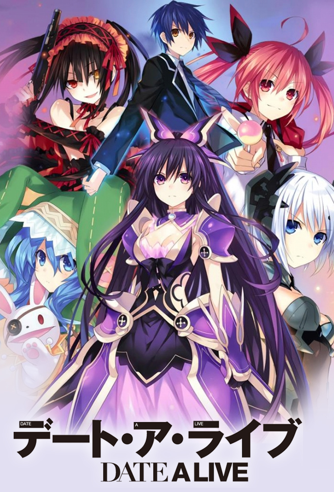

剧集列表
第一季
/Season 1/约会大作战 - S01E01 - 四月十日-thumb.jpg)
1. 四月十日
刚刚升到来禅高中的二年级的五河士道。
他和妹妹在一起生活，每天过着平凡的而学校生活。有一天突然响起来“空间震”的警报。本应是习以为常的避难，但这次的空间地震过程中，却让他邂逅了一个美丽的精灵——
“你，是来杀我的吗？
/Season 1/约会大作战 - S01E02 - 再接近遭遇-thumb.jpg)
2. 再接近遭遇
士道为了拯救在空间震中心遇到的少女，在“拉塔特斯克”的帮助下接受特训。
从琴里那里得到的指示是：“向老师求爱！？面对突如其来的实践，士道不知所措。
然后，空间震的警报又再次响起了……
/Season 1/约会大作战 - S01E03 - 分割天空之剑-thumb.jpg)
3. 分割天空之剑
“是你约我的吧，要约会的吧”
士道对突然出现的精灵十香说道，尽管他还不知所措。
借助“拉塔特斯克”，他们漫步在天宫市街。
对于每次来到这个空间都都受到AST生命威胁的十香而言，这就是她初次接触到的世界的样子。
/Season 1/约会大作战 - S01E04 - 不高兴的雨-thumb.jpg)
4. 不高兴的雨
天气预报被下雨所背叛了，在雨中的神社里，士道遇见了在积水中玩耍的少女。
那是一个梦幻般的，给人以怯生生样子的少女。
在此后的数日间，可空间大爆炸一起出现的、是识别名为“隐士”的精灵，她正是士道在神社遇到的那个少女。
/Season 1/约会大作战 - S01E05 - 冰冻的大地-thumb.jpg)
5. 冰冻的大地
四糸乃很珍视的布偶“四糸奈”失踪了。
为了救四糸乃，士道封印了的精灵之力，从寻找“四糸奈”开始。
但是，琴里他们发现“拉塔特斯克”查到的“四糸奈”的所在之处竟是鸢一折纸的住所。
/Season 1/约会大作战 - S01E06 - 恋爱的温泉-thumb.jpg)
6. 恋爱的温泉
要去温泉的士道他们被十香和四糸乃死磨硬泡。
另一方面，AST天宫驻地的队员们正在为队长的日下部辽子策划一个在温泉的慰劳会。
为了不让精灵和AST接触，“拉塔特斯克”开始行动。围绕温泉一场大战拉开了帷幕。
/Season 1/约会大作战 - S01E07 - 来访者们-thumb.jpg)
7. 来访者们
“其实我是精灵”转学生的时崎狂三若无其事的说道。
同一时间，在AST天宫屯驻地陆上自卫队的王牌崇宫真那开始加入。
新的精灵的出场再加上管士道叫“哥哥”的真那，令士道和琴里应接不暇。
/Season 1/约会大作战 - S01E08 - 三重狂骚曲-thumb.jpg)
8. 三重狂骚曲
士道本次的任务是把十香、折纸、还有狂三都牵扯其中的三角关系的约会！
想一想就有末日来临的紧张感！
挑战肉体和精神的极限的士道！如履薄冰一样的任务之后，还有属于士道的明天吗！？
/Season 1/约会大作战 - S01E09 - 狂乱的恶梦-thumb.jpg)
9. 狂乱的恶梦
千钧一发，真那从施暴的狂三手下救出了士道。
原封不动的转达了“习惯了就让人讨厌了”的话，士道无法对向狂三动手的真那隐藏经受的打击。
愤怒、悔恨向士道阵阵袭来……虚脱。
然后在丧失掉力气的士道的瞳孔中，映出了夜刀神十香的身影。
在笼罩着黑暗的士道的内心，再次燃起了希望之光！
/Season 1/约会大作战 - S01E10 - 炎之精灵(Efreet)-thumb.jpg)
10. 炎之精灵(Efreet)
救下被狂三逼的无计可施的士道，现身的是……五河琴里。
超越人类的力量，以天使现身的琴里的身影、毫无疑问——。
五河兄妹的过去越来越清晰了。
于是，一个真相……新的谜底呼之欲出了。
/Season 1/约会大作战 - S01E11 - 倒数计时-thumb.jpg)
11. 倒数计时
留给琴里的时间，琴里作为琴里的时间只有此后的2天……
对自幼相伴的妹妹士道应该采取的行动就是“与其约会”。
士道能否救下最爱的妹妹琴里！？
在繁华的街市中，五颜六色的泳装，在更衣室中，士道面临着终极的抉择！
/Season 1//约会大作战 - S01E12 - 无法放弃的事物-thumb.jpg)
12. 无法放弃的事物
士道为了琴里正在进行泳池约会。
但是，即使在那个时间，也无情的吹来冲击和轰鸣声。
正在那里的是眼睛里闪着复仇的火焰的鸢一折纸。